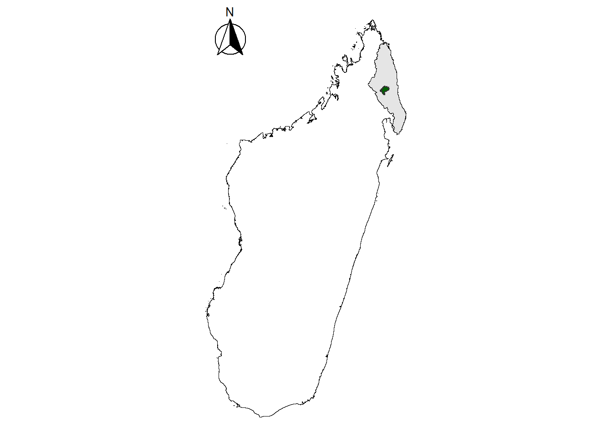
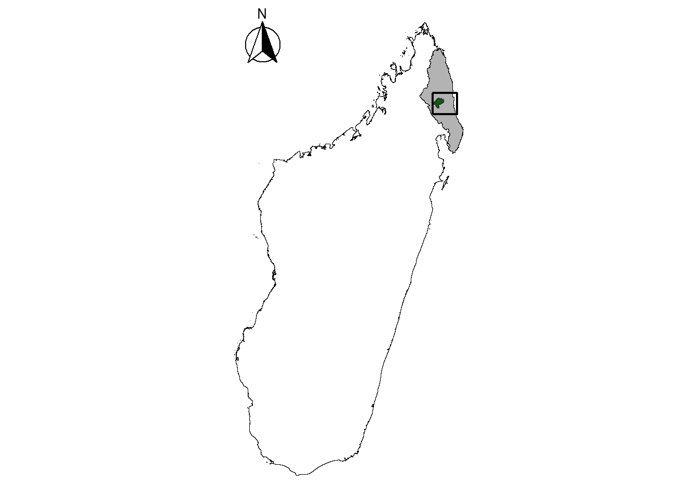
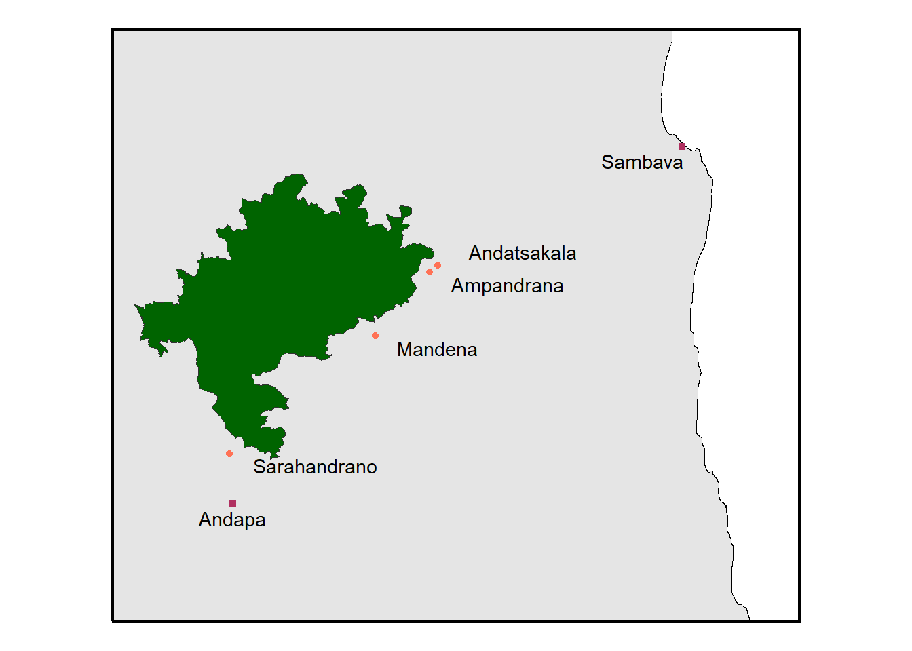
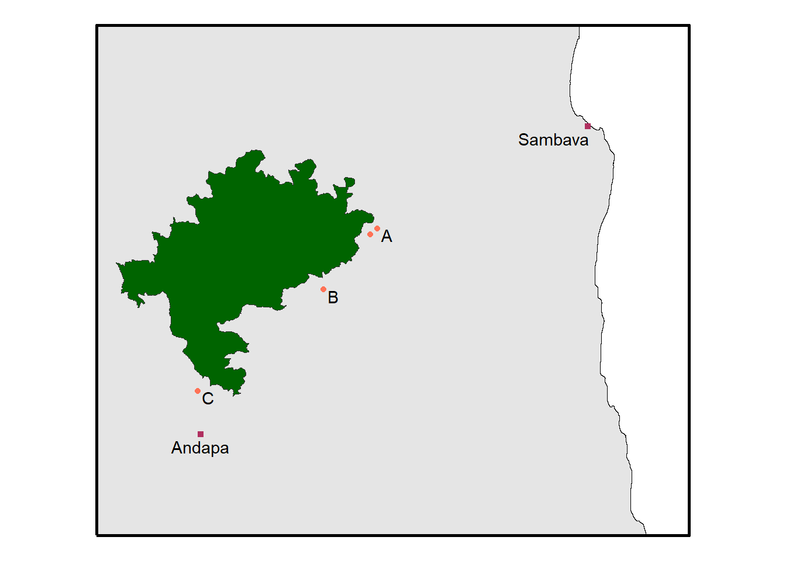
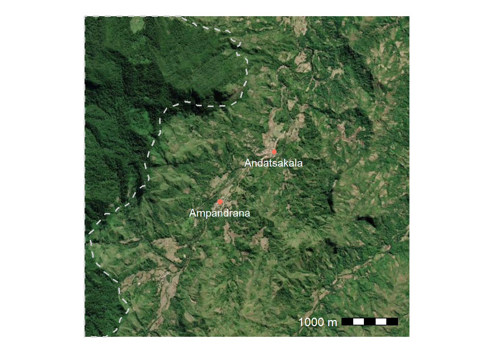
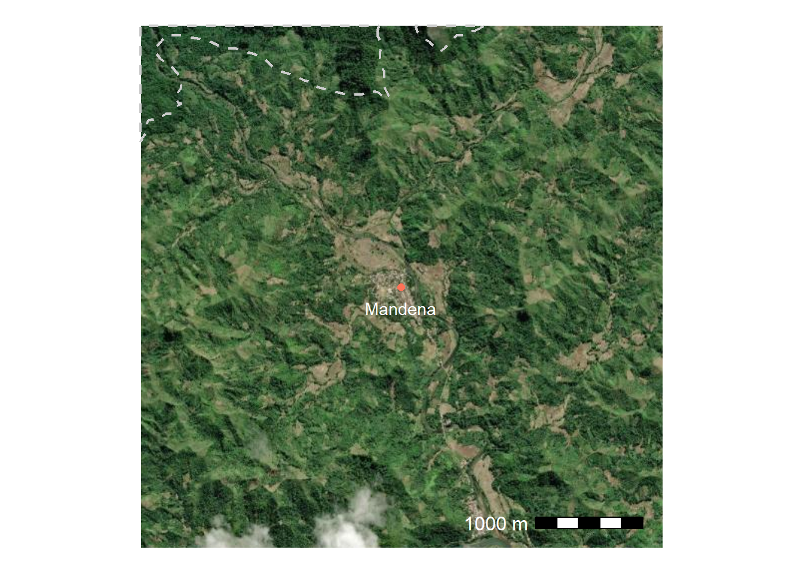
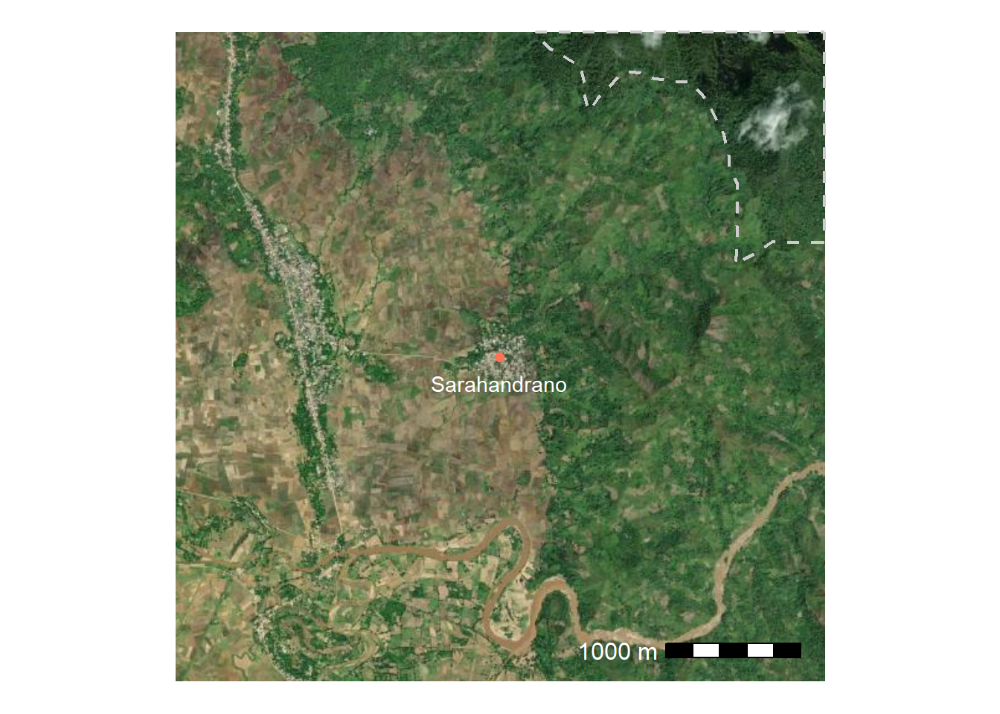
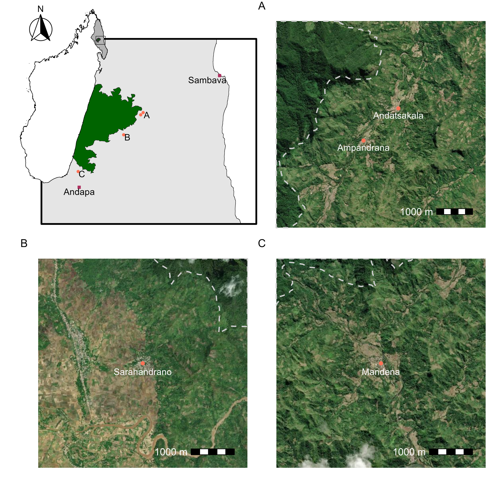

Building maps of a study area using R is straight forward, flexible, and easily adaptable. For this example I am going to make a map of the region where my PhD research takes place in the SAVA region of Madagascar. Maps like these are in my Astrovirus paper and Leptospira in small mammals paper.
Data set up
The data needed to build these maps is just the locations of each of the villages and a shapefile of the boundary of Marojejy National Park. The shapefile is publicly available from Protected Planet. The geodata package has country and regional boarders. To work with spatial data the sf package is needed.
## coord reference desired (this matches the basemaps)crs_desired <-3857## Village locationsvillage_locs <-data.frame(## regional notes if this is a major city in the regionregional =c(0, 0, 0, 0, 1, 1),village =c("Andatsakala", "Ampandrana", "Mandena", "Sarahandrano","Sambava", "Andapa"),lat =c(-14.39810, -14.40613, -14.47705, -14.60757,-14.26652, -14.66350),lon =c(49.88619, 49.87721, 49.81470, 49.64776,50.16664, 49.65145)) %>%mutate(regional =as.factor(regional)) %>%## make spatial (currently WGS 84)st_as_sf(coords =c("lon", "lat"), crs=4326) %>%## re projectst_transform(crs = crs_desired)## national park shape filenational_park <-st_read("C:/Users/Kayla/Documents/marojejy_polygon/marojejy polygon/marojejy_polygon.shp")
Reading layer `marojejy_polygon' from data source
`C:\Users\Kayla\Documents\marojejy_polygon\marojejy polygon\marojejy_polygon.shp'
using driver `ESRI Shapefile'
Simple feature collection with 1 feature and 0 fields
Geometry type: POLYGON
Dimension: XY
Bounding box: xmin: 49.53831 ymin: -14.61449 xmax: 49.8818 ymax: -14.29655
Geodetic CRS: WGS 84
## re projectnational_park <- national_park %>%st_transform(crs = crs_desired)## madagascar and sava region mada <- geodata::gadm(country ="Madagascar", level =4, path=".")mada <-st_as_sf(mada) %>%st_transform(mada, crs=crs_desired)## group the entire country geometrymadagascar <- mada %>%group_by(COUNTRY) %>%st_union()## just sava regionsava <- mada %>%filter(NAME_2 =="Sava") %>%st_union()
Plot defaults
## use theme void to not get grid lines or axis labelstheme_set(theme_void())theme_update(plot.title =element_text(hjust =0.5),plot.subtitle =element_text(hjust =0.5))
Making the maps
Country/region inset
Having an inset of the country and region is helpful for orienting readers to where in the world a map is located. For this I’ll just the country, region, and national park shapes. The ggspatial package has nice tools to get scale bars and north arrows.
## make inset maps of madagascar with Sava highlightedggplot() +## countrygeom_sf(data = madagascar, fill ="white", col ="black") +## regiongeom_sf(data = sava, col ="black", fill ="grey90") +## park boundarygeom_sf(data=national_park, fill ="darkgreen", col="grey20", linewidth =0.5)+## north arrowannotation_north_arrow(location ="tl", which_north ="true", style = north_arrow_fancy_orienteering)

Including a box for the next inset around the study area would be helpful
## A 15km buffer around the villages for zoomed in insetstudy_ext <- village_locs %>%## because projection is utm, dist units are mst_buffer(dist=15000) %>%## bounding box around that areast_bbox() %>%st_as_sfc()## update the previous map(country_wide <-ggplot() +## countrygeom_sf(data = madagascar, fill ="white", col ="black") +## regiongeom_sf(data = sava, col ="black", fill ="grey70") +## park boundarygeom_sf(data=national_park, fill ="darkgreen", col="grey20", linewidth =0.5)+## box of map extentgeom_sf(data=study_ext, col="black", fill="transparent",linewidth =0.75) +## north arrowannotation_north_arrow(location ="tl", which_north ="true", style = north_arrow_fancy_orienteering))

Study area inset
It would be helpful to also have an inset with the study area.
## entire study area with a 2.5km buffer around each village study_ext_small <- village_locs %>%## just the villages in the studyfilter(regional ==0) %>%## because projection is utm, dist units are mst_buffer(dist=2500) %>%## bounding box around that areast_bbox() %>%st_as_sfc()## crop the sava region to that bigger buffersava_crop <-st_crop(sava, study_ext)## plot that insetggplot() +## regional cropgeom_sf(data = sava_crop, col ="black", fill ="grey90") +## box of map extentgeom_sf(data=study_ext, col="black", fill="transparent", linewidth =1) +## park boundarygeom_sf(data = national_park, fill ="darkgreen", col="grey20")+## study area# geom_sf(data = study_ext_small, # fill="transparent", # col="grey20", # linewidth = 1) +## village locations if in study or regional citygeom_sf(data = village_locs, aes(col=regional, shape=regional)) +geom_sf_text(data = village_locs, aes(label = village),## this took some messing to figure out a good place for eachnudge_x =c(11000, 10000, 8000, 11000, -5000, 0),nudge_y =c(1700, rep(-1500, 3), -1800, -1800) ) +## shapes and colors of pointsscale_color_manual(values =c("coral1", "maroon")) +scale_shape_manual(values =c(16, 15))+## I don't need a legend for the citiestheme(legend.position ="none") +labs(x=NULL, y=NULL)

For this to be clearer in the panels below use A, B, C instead
village_text <- village_locs %>%mutate(inset_label =case_when(regional ==1~ village, village %in%c("Ampandrana","Andatsakala") ~"A", village =="Mandena"~"B", village =="Sarahandrano"~"C"))(regional_inset <-ggplot() +## regional cropgeom_sf(data = sava_crop, col ="black", fill ="grey90") +## box of map extentgeom_sf(data=study_ext, col="black", fill="transparent", linewidth =1) +## park boundarygeom_sf(data = national_park, fill ="darkgreen", col="grey20")+## study area# geom_sf(data = study_ext_small, # fill="transparent", # col="grey20", # linewidth = 1) +## village locations if in study or regional citygeom_sf(data = village_locs, aes(col=regional, shape=regional)) +geom_sf_text(data = village_text, check_overlap =TRUE, #this removes duplicate Aaes(label = inset_label),## this took some messing to figure out a good place for eachnudge_x =c(rep(1500, 4), -5000, 0),nudge_y =c(rep(-1000, 4), -1800, -1800) ) +## shapes and colors of pointsscale_color_manual(values =c("coral1", "maroon")) +scale_shape_manual(values =c(16, 15))+## I don't need a legend for the citiestheme(legend.position ="none") +labs(x=NULL, y=NULL))

Satellite imagery for each village
The basemaps package is useful for downloading publically available imagery.
## list availabale base map types# get_maptypes()## set defaults for the basemapsset_defaults(map_service ="esri", map_type ="world_imagery")
The two most north eastern can go together.
## subset to those two villagesv_sub <- village_locs %>%filter(village %in%c("Andatsakala", "Ampandrana")) ## make a buffer 2.5km around that areav_ext <- v_sub %>%st_buffer(dist =2500)## because I want include the park boundary, also crop that to the areapark_crop <-st_crop(national_park, v_ext)## basemap downloads as a ggplot## this take(p1 <-basemap_ggplot(v_ext, verbose =FALSE) +## park boundarygeom_sf(data = park_crop, fill="transparent", col="grey80", linewidth =0.75,linetype =2) +## villagesgeom_sf(data = v_sub, shape=16, col="coral1", size=2) +geom_sf_text(data = v_sub, aes(label = village),color ="white",nudge_y =-200) +## scale bar annotation_scale(location="br", pad_x =unit(1, "cm"), pad_y =unit(1, "cm"), text_col ="white",text_cex =1) +## plot area formattinglabs(x=NULL, y=NULL))

The next village
## subset to those two villagesv_sub <- village_locs %>%filter(village %in%c("Mandena")) ## make a buffer 2.5km around that areav_ext <- v_sub %>%st_buffer(dist =2500)## because I want include the park boundary, also crop that to the areapark_crop <-st_crop(national_park, v_ext)## basemap downloads as a ggplot## this take(p2 <-basemap_ggplot(v_ext, verbose =FALSE) +## park boundarygeom_sf(data = park_crop, fill="transparent", col="grey80", linewidth =0.75,linetype =2) +## villagesgeom_sf(data = v_sub, shape=16, col="coral1", size=2) +geom_sf_text(data = v_sub, aes(label = village),color ="white",nudge_y =-200) +## scale bar annotation_scale(location="br", pad_x =unit(1, "cm"), pad_y =unit(1, "cm"), text_col ="white",text_cex =1) +## plot area formattinglabs(x=NULL, y=NULL))

The southern most village
## subset to those two villagesv_sub <- village_locs %>%filter(village %in%c("Sarahandrano")) ## make a buffer 2.5km around that areav_ext <- v_sub %>%st_buffer(dist =2500)## because I want include the park boundary, also crop that to the areapark_crop <-st_crop(national_park, v_ext)## basemap downloads as a ggplot## this take(p3 <-basemap_ggplot(v_ext, verbose =FALSE) +## park boundarygeom_sf(data = park_crop, fill="transparent", col="grey80", linewidth =0.75,linetype =2) +## villagesgeom_sf(data = v_sub, shape=16, col="coral1", size=2) +geom_sf_text(data = v_sub, aes(label = village),color ="white",nudge_y =-200) +## scale bar annotation_scale(location="br", pad_x =unit(1, "cm"), pad_y =unit(1, "cm"), text_col ="white",text_cex =1) +## plot area formattinglabs(x=NULL, y=NULL))

Combined figure
Both the patchwork and cowplot packages are useful for combining ggplot into one figure. I’m going to use patchwork here. This involves choosing the size you want the final image to be then saving and making adjustments, then resaving. For example, the final plot below would benifit from a larger sized font in the text labels.
## plots west to eastplot_spacer() + p1 + p3 + p2 +plot_annotation(tag_levels ="A")ggsave("village-panels.png", dpi =600, width =8, height =8, units ="in")ggsave("regional-inset.png", plot = regional_inset,dpi =600, width =4, height =4, units ="in")ggsave("mada-studyarea.png", plot = country_wide,dpi =600, width =2, height =3, units ="in")
The final touches can be put on in any simple formatting software, such as powerpoint. Here is the final figure.

Source Code
---title: "Maps with Satelite Imagery"description: "Making maps in R"author: - name: Kayla Kauffman url: https://https://kmkauffm.github.io/ orcid: 0000-0002-4897-9428format: html: toc: true toc-location: left message: false warning: false code-fold: false code-tools: true theme: sandstonedate: 2024-09-04categories: [R, code, spatial] # self-defined categoriesimage: areal-figure.pngdraft: false # setting this to `true` will prevent your post from appearing on your listing page until you're ready!---```{r}#| echo: false#| message: falselibrary(tidyverse)library(patchwork)library(sf)library(ggspatial)library(basemaps)```## IntroductionBuilding maps of a study area using R is straight forward, flexible, and easily adaptable. For this example I am going to make a map of the region where my PhD research takes place in the SAVA region of Madagascar. Maps like these are in my [Astrovirus](publications.qmd#section-1) paper and [Leptospira in small mammals](publications.qmd) paper.## Data set upThe data needed to build these maps is just the locations of each of the villages and a shapefile of the boundary of Marojejy National Park. The shapefile is publicly available from [Protected Planet](https://www.protectedplanet.net/2305). The `geodata` package has country and regional boarders. To work with spatial data the `sf` package is needed.```{r}## coord reference desired (this matches the basemaps)crs_desired <-3857## Village locationsvillage_locs <-data.frame(## regional notes if this is a major city in the regionregional =c(0, 0, 0, 0, 1, 1),village =c("Andatsakala", "Ampandrana", "Mandena", "Sarahandrano","Sambava", "Andapa"),lat =c(-14.39810, -14.40613, -14.47705, -14.60757,-14.26652, -14.66350),lon =c(49.88619, 49.87721, 49.81470, 49.64776,50.16664, 49.65145)) %>%mutate(regional =as.factor(regional)) %>%## make spatial (currently WGS 84)st_as_sf(coords =c("lon", "lat"), crs=4326) %>%## re projectst_transform(crs = crs_desired)## national park shape filenational_park <-st_read("C:/Users/Kayla/Documents/marojejy_polygon/marojejy polygon/marojejy_polygon.shp")## re projectnational_park <- national_park %>%st_transform(crs = crs_desired)## madagascar and sava region mada <- geodata::gadm(country ="Madagascar", level =4, path=".")mada <-st_as_sf(mada) %>%st_transform(mada, crs=crs_desired)## group the entire country geometrymadagascar <- mada %>%group_by(COUNTRY) %>%st_union()## just sava regionsava <- mada %>%filter(NAME_2 =="Sava") %>%st_union()```Plot defaults```{r}## use theme void to not get grid lines or axis labelstheme_set(theme_void())theme_update(plot.title =element_text(hjust =0.5),plot.subtitle =element_text(hjust =0.5))```## Making the maps### Country/region insetHaving an inset of the country and region is helpful for orienting readers to where in the world a map is located. For this I'll just the country, region, and national park shapes. The `ggspatial` package has nice tools to get scale bars and north arrows.```{r}## make inset maps of madagascar with Sava highlightedggplot() +## countrygeom_sf(data = madagascar, fill ="white", col ="black") +## regiongeom_sf(data = sava, col ="black", fill ="grey90") +## park boundarygeom_sf(data=national_park, fill ="darkgreen", col="grey20", linewidth =0.5)+## north arrowannotation_north_arrow(location ="tl", which_north ="true", style = north_arrow_fancy_orienteering)```Including a box for the next inset around the study area would be helpful```{r}## A 15km buffer around the villages for zoomed in insetstudy_ext <- village_locs %>%## because projection is utm, dist units are mst_buffer(dist=15000) %>%## bounding box around that areast_bbox() %>%st_as_sfc()## update the previous map(country_wide <-ggplot() +## countrygeom_sf(data = madagascar, fill ="white", col ="black") +## regiongeom_sf(data = sava, col ="black", fill ="grey70") +## park boundarygeom_sf(data=national_park, fill ="darkgreen", col="grey20", linewidth =0.5)+## box of map extentgeom_sf(data=study_ext, col="black", fill="transparent",linewidth =0.75) +## north arrowannotation_north_arrow(location ="tl", which_north ="true", style = north_arrow_fancy_orienteering))```### Study area insetIt would be helpful to also have an inset with the study area.```{r}## entire study area with a 2.5km buffer around each village study_ext_small <- village_locs %>%## just the villages in the studyfilter(regional ==0) %>%## because projection is utm, dist units are mst_buffer(dist=2500) %>%## bounding box around that areast_bbox() %>%st_as_sfc()## crop the sava region to that bigger buffersava_crop <-st_crop(sava, study_ext)## plot that insetggplot() +## regional cropgeom_sf(data = sava_crop, col ="black", fill ="grey90") +## box of map extentgeom_sf(data=study_ext, col="black", fill="transparent", linewidth =1) +## park boundarygeom_sf(data = national_park, fill ="darkgreen", col="grey20")+## study area# geom_sf(data = study_ext_small, # fill="transparent", # col="grey20", # linewidth = 1) +## village locations if in study or regional citygeom_sf(data = village_locs, aes(col=regional, shape=regional)) +geom_sf_text(data = village_locs, aes(label = village),## this took some messing to figure out a good place for eachnudge_x =c(11000, 10000, 8000, 11000, -5000, 0),nudge_y =c(1700, rep(-1500, 3), -1800, -1800) ) +## shapes and colors of pointsscale_color_manual(values =c("coral1", "maroon")) +scale_shape_manual(values =c(16, 15))+## I don't need a legend for the citiestheme(legend.position ="none") +labs(x=NULL, y=NULL)```For this to be clearer in the panels below use A, B, C instead```{r}village_text <- village_locs %>%mutate(inset_label =case_when(regional ==1~ village, village %in%c("Ampandrana","Andatsakala") ~"A", village =="Mandena"~"B", village =="Sarahandrano"~"C"))(regional_inset <-ggplot() +## regional cropgeom_sf(data = sava_crop, col ="black", fill ="grey90") +## box of map extentgeom_sf(data=study_ext, col="black", fill="transparent", linewidth =1) +## park boundarygeom_sf(data = national_park, fill ="darkgreen", col="grey20")+## study area# geom_sf(data = study_ext_small, # fill="transparent", # col="grey20", # linewidth = 1) +## village locations if in study or regional citygeom_sf(data = village_locs, aes(col=regional, shape=regional)) +geom_sf_text(data = village_text, check_overlap =TRUE, #this removes duplicate Aaes(label = inset_label),## this took some messing to figure out a good place for eachnudge_x =c(rep(1500, 4), -5000, 0),nudge_y =c(rep(-1000, 4), -1800, -1800) ) +## shapes and colors of pointsscale_color_manual(values =c("coral1", "maroon")) +scale_shape_manual(values =c(16, 15))+## I don't need a legend for the citiestheme(legend.position ="none") +labs(x=NULL, y=NULL))```### Satellite imagery for each villageThe `basemaps` package is useful for downloading publically available imagery.```{r}## list availabale base map types# get_maptypes()## set defaults for the basemapsset_defaults(map_service ="esri", map_type ="world_imagery")```The two most north eastern can go together.```{r}## subset to those two villagesv_sub <- village_locs %>%filter(village %in%c("Andatsakala", "Ampandrana")) ## make a buffer 2.5km around that areav_ext <- v_sub %>%st_buffer(dist =2500)## because I want include the park boundary, also crop that to the areapark_crop <-st_crop(national_park, v_ext)## basemap downloads as a ggplot## this take(p1 <-basemap_ggplot(v_ext, verbose =FALSE) +## park boundarygeom_sf(data = park_crop, fill="transparent", col="grey80", linewidth =0.75,linetype =2) +## villagesgeom_sf(data = v_sub, shape=16, col="coral1", size=2) +geom_sf_text(data = v_sub, aes(label = village),color ="white",nudge_y =-200) +## scale bar annotation_scale(location="br", pad_x =unit(1, "cm"), pad_y =unit(1, "cm"), text_col ="white",text_cex =1) +## plot area formattinglabs(x=NULL, y=NULL))```The next village```{r}## subset to those two villagesv_sub <- village_locs %>%filter(village %in%c("Mandena")) ## make a buffer 2.5km around that areav_ext <- v_sub %>%st_buffer(dist =2500)## because I want include the park boundary, also crop that to the areapark_crop <-st_crop(national_park, v_ext)## basemap downloads as a ggplot## this take(p2 <-basemap_ggplot(v_ext, verbose =FALSE) +## park boundarygeom_sf(data = park_crop, fill="transparent", col="grey80", linewidth =0.75,linetype =2) +## villagesgeom_sf(data = v_sub, shape=16, col="coral1", size=2) +geom_sf_text(data = v_sub, aes(label = village),color ="white",nudge_y =-200) +## scale bar annotation_scale(location="br", pad_x =unit(1, "cm"), pad_y =unit(1, "cm"), text_col ="white",text_cex =1) +## plot area formattinglabs(x=NULL, y=NULL))```The southern most village```{r}## subset to those two villagesv_sub <- village_locs %>%filter(village %in%c("Sarahandrano")) ## make a buffer 2.5km around that areav_ext <- v_sub %>%st_buffer(dist =2500)## because I want include the park boundary, also crop that to the areapark_crop <-st_crop(national_park, v_ext)## basemap downloads as a ggplot## this take(p3 <-basemap_ggplot(v_ext, verbose =FALSE) +## park boundarygeom_sf(data = park_crop, fill="transparent", col="grey80", linewidth =0.75,linetype =2) +## villagesgeom_sf(data = v_sub, shape=16, col="coral1", size=2) +geom_sf_text(data = v_sub, aes(label = village),color ="white",nudge_y =-200) +## scale bar annotation_scale(location="br", pad_x =unit(1, "cm"), pad_y =unit(1, "cm"), text_col ="white",text_cex =1) +## plot area formattinglabs(x=NULL, y=NULL))```## Combined figureBoth the `patchwork` and `cowplot` packages are useful for combining ggplot into one figure. I'm going to use `patchwork` here. This involves choosing the size you want the final image to be then saving and making adjustments, then resaving. For example, the final plot below would benifit from a larger sized font in the text labels.```{r, eval=FALSE}## plots west to eastplot_spacer() + p1 + p3 + p2 +plot_annotation(tag_levels ="A")ggsave("village-panels.png", dpi =600, width =8, height =8, units ="in")ggsave("regional-inset.png", plot = regional_inset,dpi =600, width =4, height =4, units ="in")ggsave("mada-studyarea.png", plot = country_wide,dpi =600, width =2, height =3, units ="in")```The final touches can be put on in any simple formatting software, such as powerpoint. Here is the final figure.{fig-align="center"}
![]()